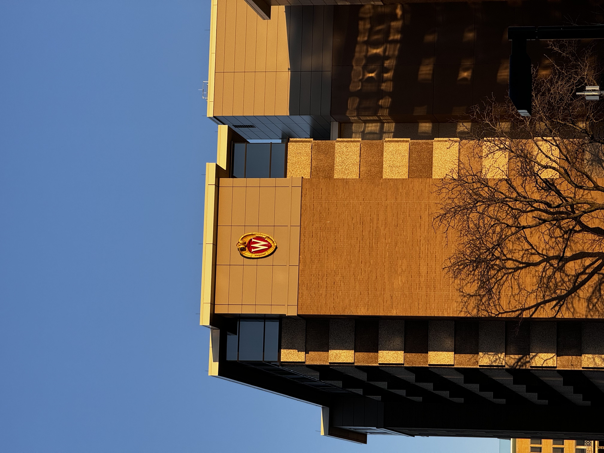
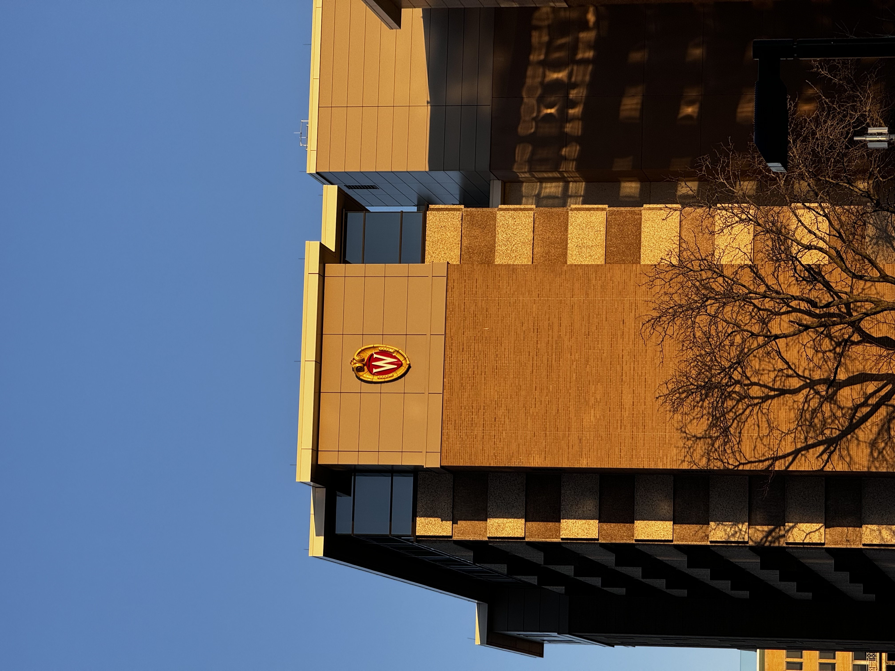
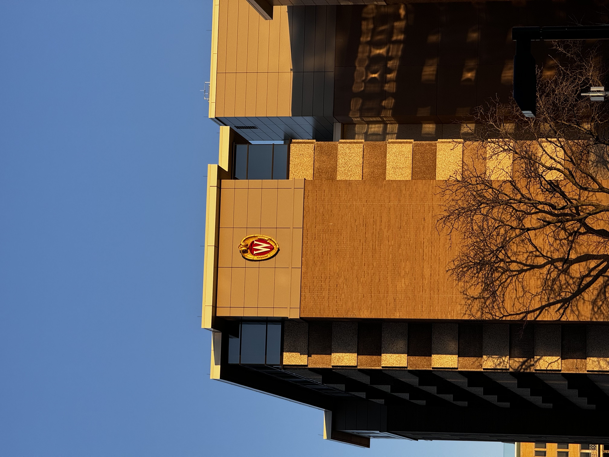

Sample Picture is here. For details, click the navigation link above.


 

For more photography works by other photographers, feel free to check out Cameraderie.org.
Link to Cameraderie.org, a photography sharing website..Sample Picture is here. For details, click the navigation link above.

For more photography works by other photographers, feel free to check out Cameraderie.org.
Link to Cameraderie.org, a photography sharing website..